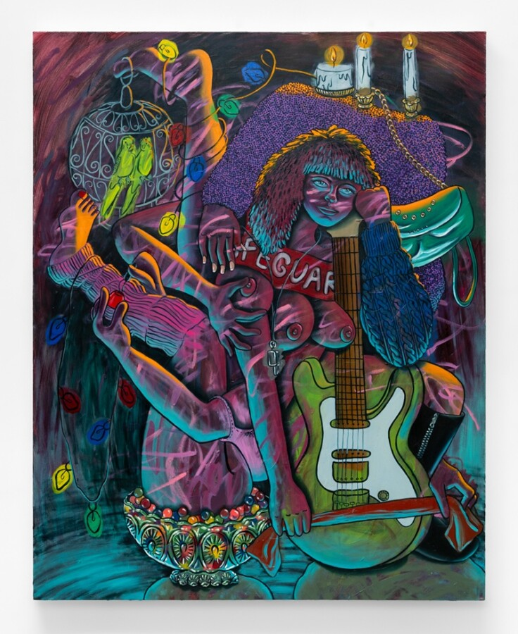

Closing Reception: Girl Talk by Lindsey Kircher
Closing reception for Girl Talk, a solo exhibition of paintings by Lindsey Kircher at Oliva Gallery in Chicago.
Join Oliva Gallery for the closing reception of Girl Talk, a solo exhibition of paintings by Chicago-based artist Lindsey Kircher. The exhibition brings together a group of recent figurative works that stage psychologically charged scenes populated by women, animals, and symbolic objects.
Through dense compositions and saturated color, Kircher constructs theatrical environments that blur the boundaries between interior life and performance. Across these paintings, bodies, decorative objects, and animal figures intertwine to form layered narrative spaces where fragments of domestic life accumulate into something closer to myth or allegory.
Poodles, parrots, musical instruments, bird cages, fruit, and candles appear alongside female figures whose poses oscillate between vulnerability and command. The works reference traditions of figurative painting that intertwine the body, ornament, and interior space while complicating those associations through exaggeration, humor, and visual excess.
The closing reception offers visitors the final opportunity to view the exhibition, meet the artist, and engage with the work.
Exhibition
Girl Talk
Artist